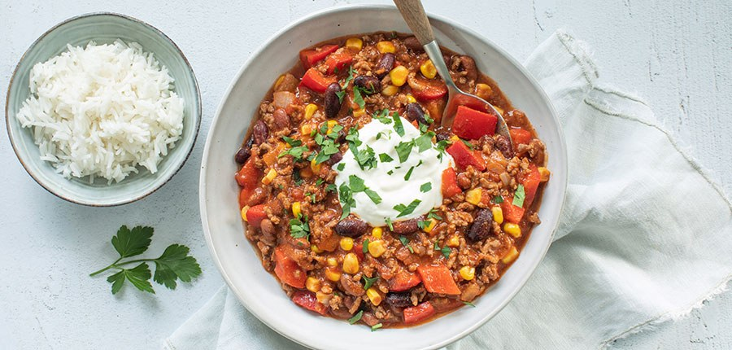

Chili con carne

Ingredienten
- 1 grote ui
- 2 rode paprika’s
- 2 eetlepels kruidenmix voor ( chili con carne )
- 1 eetlepels olijfolie
- 500 gr rundergehakt
- 450 gr rode/bruine bonen
- 1 blik tomatenblokjes ( à 400 gr )
- 1 klein blikje tomatenpuree
- 200 ml gezeefde tomaten
- 1 klein blikje maïs à 150 gr
- 250 ml zure room
- peterselie ( fijngehakt )
- 300 gr rijst voor erbij
Bereiding
- Snipper de ui en bak deze in een grote (wok)pan met een beetje olie of margarine.
- Voeg het gehakt toe en bak dit rul. Voeg 2 eetlepels van de chili con carne kruidenmix toe.
- Snijd de rode paprika’s in stukjes en bak een paar minuten mee.
- Doe dan de tomatenpuree, tomatenblokjes en gezeefde tomaten erbij en roer alles goed door elkaar. Laat dit mengsel 10 minuten pruttelen.
- Kook ondertussen ook de rijst gaar.
- Doe dan de bonen en maïs bij de tomatensaus met gehakt en laat nog 10 minuten pruttelen.
- Serveer de chili con carne met een flinke schep zure room, wat fijngehakte peterselie en rijst.
h